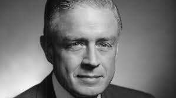

Thomas John Watson Sr. was an American businessman who served as the chairman and CEO of IBM. Thomas John Watson Sr. was born on february 17 1874 in Campbell, Newyork.He oversaw the company's growth into an international force from 1914 to 1956. Watson developed IBM's management style and corporate culture from John Henry Patterson's training at NCR. He turned the company into a highly effective selling organization, based largely on punched card tabulating machines. He was known as a self made industrialist in his times.
Watson married Jeanette Kittredge, from a prominent Dayton, Ohio railroad family, on April 17, 1913. They had two sons and two daughters. Watson served as a powerful trustee of Columbia University from June 6, 1933, until his death. He engineered the selection of Dwight D. Eisenhower as its president and played the central role in convincing Eisenhower to become president of the university. Additionally, he served as a trustee of Lafayette College and is the namesake of Watson Hall, a campus residence hall.
Charles Ranlett Flint, who had engineered the amalgamation (via stock acquisition) forming the Computing-Tabulating-Recording Company (CTR) found it difficult to manage the five companies. He hired Watson as general manager on May 1, 1914, when the five companies had about 1,300 employees. Eleven months later he was made President when court cases relating to his time at NCR were resolved.[9] Within four years revenues had been doubled to $9 million. In 1924, he renamed CTR to International Business Machines. Watson built IBM into such a dominant company that the federal government filed a civil antitrust suit against it in 1952. IBM owned and leased to its customers more than 90 percent of all tabulating machines in the United States at the time.
Watson was active in civic affairs and was noted for his efforts on behalf of the arts and world peace. In his honour, his wife started the Thomas J. Watson Foundation in 1961. In 1968 their four children focused the foundation money toward education and world affairs, issues that were of primary importance to their father throughout his life, and launched the Thomas J. Watson Fellowship, which offered college graduates a one-year grant for independent study and travel outside the United States. Watson assembled a highly motivated, well-trained, and well-paid staff. He gave pep talks, enforced a strict dress code, and posted the now famous slogan “Think” in company offices. Coupled with an aggressive research and development program, those efforts enabled IBM to dominate its market. Watson aggressively pursued international trade in the 1930s and ’40s, extending IBM’s virtual monopoly of the business machines industry worldwide. In 1952 he turned the IBM presidency over to his son, Thomas, Jr., while retaining the post of chairman. By the time of Watson’s death four years later, the company (which had 235 employees in 1914) employed 60,000 people and had 200 offices throughout the country, with factories and assembly plants around the world.
| Business Positions | ||
|---|---|---|
| preceeded by | CEO of IBM | succeeded by |
| none | 1914-1956 | Thomas John Watson Sr. |